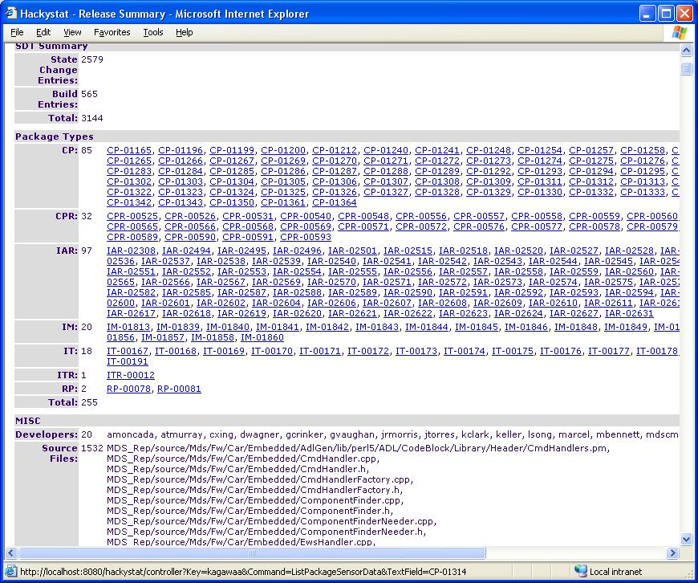
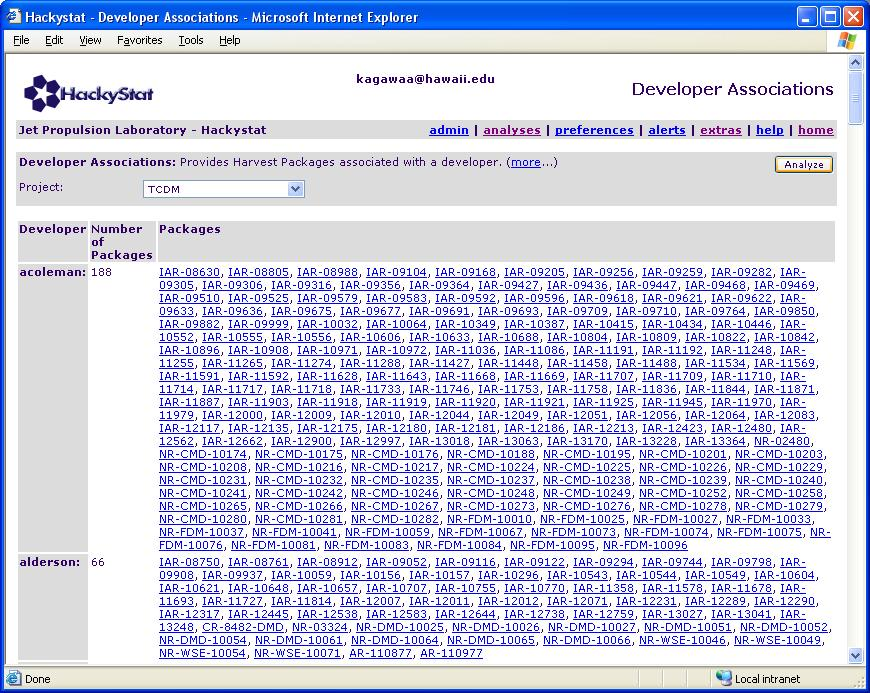

Aaron Kagawa
Philip Johnson
Collaborative Software Development Laboratory
Department of Information and Computer Sciences
University of Hawaii
kagawaa@hawaii.edu
johnson@hawaii.edu
Last update: 08/01/2004 11:00:21 AM
This report describes the initial findings of Hackystat-SQI. Hackystat-SQI is a Hackystat configuration that provides the ability to support multiple JPL projects. The unique aspect of this system is that JPL project differ in many ways and Hackystat-SQI must be able to support and understand those differences.
The biggest success that we have had this summer is understanding how to support these differences within Hackystat. We believe that the design document <http://csdl.ics.hawaii.edu/techreports/04-09/04-09.html> is the best possible design that will allow Hackystat-SQI to support any JPL project that uses Harvest. When this design is fully implemented SQI personnale will be able to extract data from any project's Harvest Instance and automatically be able to use any Hackystat analysis that is available.
This document describes the current set of analyses that are available and future steps that can be taken.
Lets first discuss the goals of Hackystat-SQI. At the very general level, the goal of Hackystat-SQI is to be able to support the collection and analysis of multiple projects at JPL. The current restriction to that Goal is that the projects that we are able to currently investigate are projects that use Harvest.
The immediate goals for the summer of 2004 are to be able to address the following issues:
At this point, Hackystat-SQI can address the first two issues. The others requires additional data to be extracted from Harvest, a LOC tool, a subsystem mapping, and various other data that are not obtainable from the current set of data that we have. I will address the issues in further datail in other sections of this document.
As I mentioned, the fundamental problem that this Hackystat system must solve is the differences in the development processes of the projects we will be supporting. The JPL projects that we will be support all use Harvest for version control. However, that is where the similarity begins and ends because Harvest can be configured differently for each project. There are two main areas of differences in the configurations of Harvest; (1) Harvest Package Model and (2) Harvest State Change Lifecycle.
There has been an ongoing discussion between Rich Hug and I whether we should "normalize" the data before sending it off to Hackystat. (By normalized we mean fit specific package models and state change lifecycles into a generic mapping). However, we feel that the differences between the model and lifecycles should not be hidden, because in fact these differences can affect quality! Therefore, we have decided that we shall send all data to Hackystat in their true form and allow Hackystat to process the differences.
To solve this problem we have designed a mapping mechanism that allows the correct interpretation of the differences in the models and lifecycles. The following graphics illustrates the mapping system; (first graphic) model mapping, (second graphic) lifecycle mapping):
Constructing these mappings allows Hackystat-SQI to process any JPL project. The current status of this mapping system is still under review and should be fully implemented in the coming months. However, we believe this is critical for Hackystat-SQI to be scalable in the long-run as we start to investigate other projects.
This section provides screen shots and explanations of the current set of analyses that are available in Hackystat-SQI.
Project Summary Analysis
The following analyses provides summaries of all the data that Hackystat-SQI has about a specified project.
Even at this level there are interesting similarities and differences between the two projects. Notice that there are about the same number of state changes in both projects. Yet, the MDS project has twice as many packages moving through the system.
Release Summary Analysis
This analysis breaks down the project summary into different releases.
Again there are differences between the two projects.
These next screen shots shows a specific MDS release. The Hackystat analysis can show what Packages made it into the release, what developers contributed to the release, what files have been released, and what types of files are in the release.

This last screen shot shows that this release contained a large portion of java code. A little more investigation shows that this is the only release in the last year that was contained so much java code.
Transition Sequence Summary Analysis
This analysis shows the real Harvest State Change Lifecycle of the projects. Knowing the transitions can show where the "bottlenecks" in developement are.
Harvest Package Summary Analysis
This analysis provides a summary of every package within the system which the specified attributes. In addition, it is an easy way to drill down in the data finding specific information about specific packages.
List Package Sensor Data Analysis
This analysis lists the sensor data associated with a package. "Sensor Data " is the lowest level of data that is stored in Hackystat.
Harvest Package Data Analysis
This analysis provides a representation of a Package. This analysis reads in "Sensor Data" and calculates the values you see below.
Package Age Summary Analysis
This analysis provides a box and whisker chart of Package Ages.
The black line indicates the mean. The black dot is the median.
The average age, which is the measurement in days of how long it takes a package from being created to closed, of CPs is ~13 days. A project can use this average to help estimate the amount of "work" that is needed to finish a package.
You should notice that the average ages for TCDM packages are much higher than MDS ages.
File Summary Analysis
Developer Association Summary Analysis

Promotion Developer